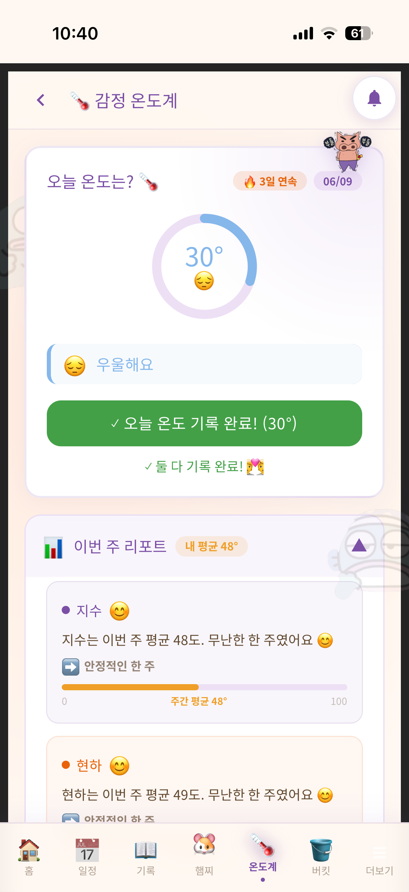
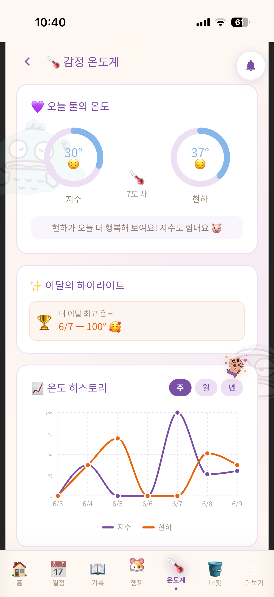
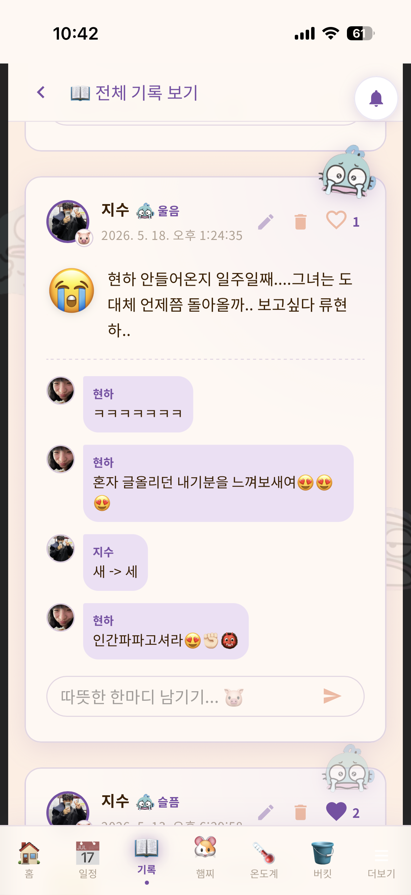
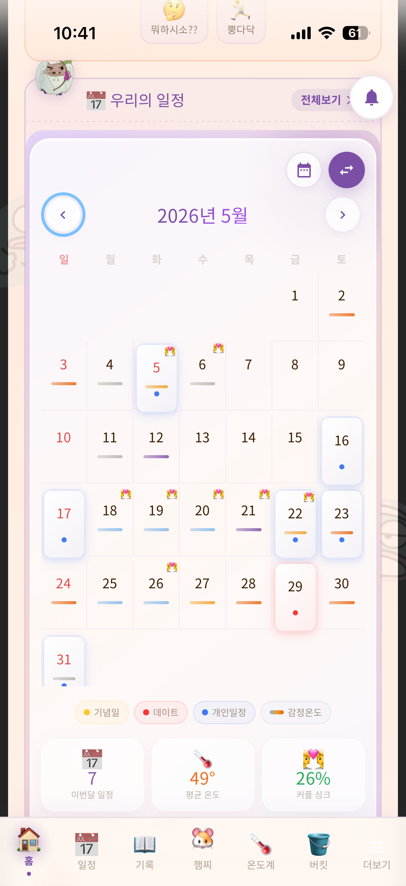
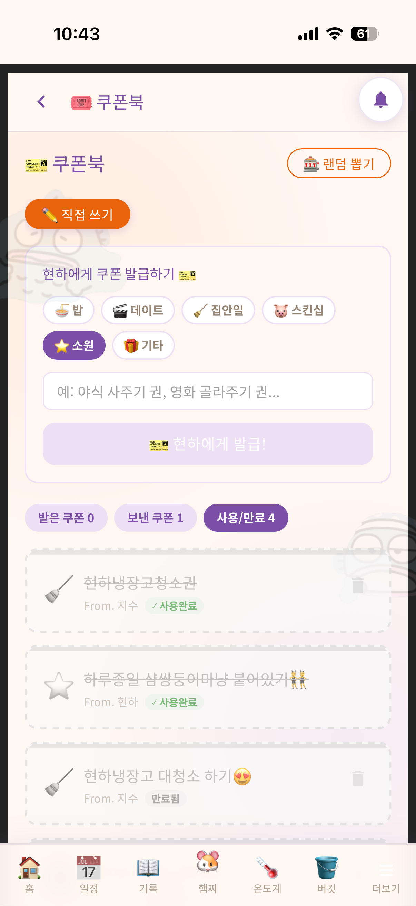
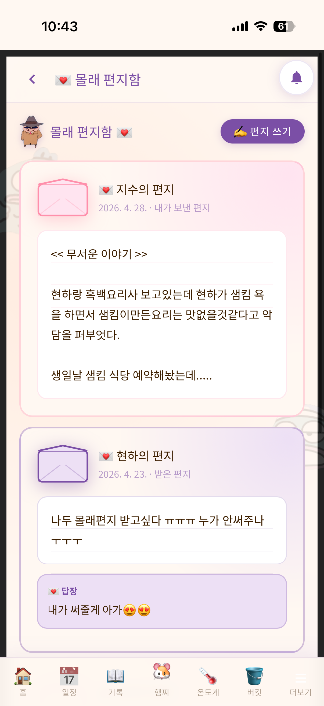
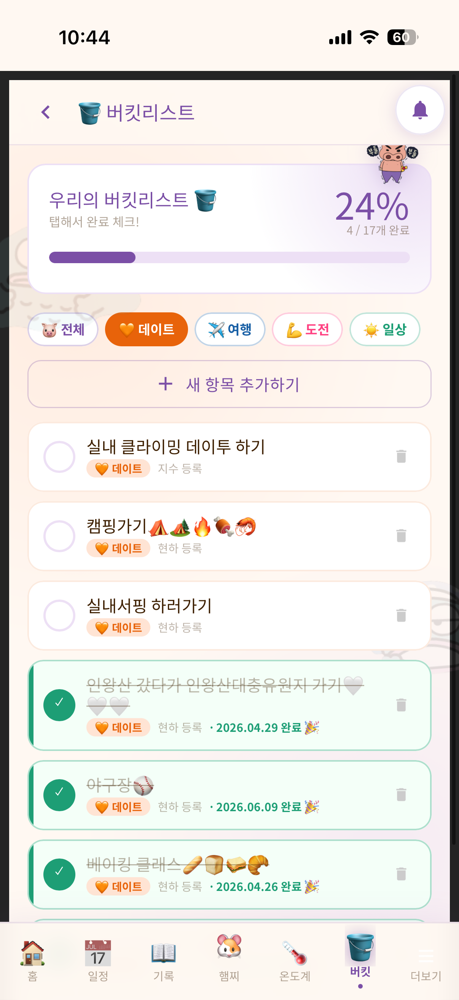

PERSONAL PROJECT
부리부리 미니홈피
우리 둘만의 공간을 직접 만들었습니다.
"앱스토어에 없어도 괜찮아요 — 우리만 쓰면 되니까요."
기존 커플 앱들의 광고, 데이터 수집, 불필요한 소셜 기능이 싫었습니다.
그래서 두 사람만을 위한 완전 프라이빗 웹앱을 직접 만들었습니다.
왜 직접 만들었나 ?
이 목표를 처음부터 지켰다고는 못 합니다. 한동안은 익명 로그인에 열린 보안 규칙이라 사실상 열려 있었고, 그걸 발견해서 닫은 과정이 이 프로젝트에서 제일 값진 삽질이었습니다(09 Troubleshooting). 지금은 PIN을 서버에서 검증하는 커스텀 토큰 인증 + 두 사람만 허용하는 보안 규칙으로 실제로 닫혀 있습니다.
감정 온도계로 매일의 기분을 1~100도로 기록하고, 주간/월간 트렌드를 자동 생성합니다. 감정도 분석하면 패턴이 보입니다.
쿠폰 룰렛, confetti 파티클, 하트 팡 효과 등 사용할 때마다 즐거운 인터랙션을 설계했습니다. 지금도 매일 실사용하며 지속적으로 개선하고 있습니다.
부리부리 미니홈피 🐷
일상 기록, 일정 공유, 감정 온도계, 편지 교환, 쿠폰 룰렛, 버킷리스트, 커플 햄스터 키우기, 인생네컷,
크리스마스 테마, PWA 푸시 알림까지 — 두 사람이 매일 쓰는 풀스택 웹 애플리케이션.
C O R E F E A T U R E S
T E C H S T A C K
하루 한 번 자신의 감정을 1~100도로 기록합니다. 상대방과의 온도 차이가 25도 이상이면 토닥토닥 공감 버튼이 자동으로 등장하고, 연속 기록 스트릭 시스템으로 매일 기록하는 습관을 만듭니다.

Fig.01a 온도 입력 화면

Fig.01b 주간 히스토리
슬라이더로 오늘의 온도를 선택하면 Firestore에 실시간 저장됩니다. 상대방의 온도가 기록되는 순간 onSnapshot 리스너가 감지해 두 사람의 온도를 즉시 비교하고, 차이가 클 때 공감 UI를 활성화합니다.
Recharts 기반 주간/월간/연간 온도 히스토리 그래프를 자동 생성합니다. 두 사람의 감정 패턴을 시각화해 대화의 시작점을 만들어줍니다.
Firebase onSnapshot으로 실시간 데이터 변경 감지. 온도 차이 알고리즘 (|temp1 - temp2| ≥ 25)으로 조건부 렌더링. 스트릭 카운터는 날짜 diff 로직으로 연속 기록일을 자동 계산. 미기록일은 Cloud Scheduler가 자정에 0도로 자동 백필합니다.
감정 이모지 + 텍스트 + 사진으로 매일의 기록을 남기고, 하트 좋아요와 실시간 댓글로 소통합니다. 캘린더에서는 일정을 실시간 동기화하고, 중요 일정은 메인 화면 D-DAY 배너에 자동 표시됩니다.

Fig.02 오늘의 기록 화면

Fig.03 커플 캘린더
Firebase Storage로 이미지 업로드 (Canvas API로 800px 이하 압축). 하트 클릭 시 canvas-confetti로 화려한 파티클 효과. 좋아요·댓글 발생 시 FCM 푸시 알림 즉시 전송.
일정 등록 시 상대방에게 실시간 알림. 중요 일정 지정 시 D-DAY 카운트다운 배너에 자동 반영. Cloud Scheduler로 기념일 D-7, D-3, D-1 자동 리마인더 발송.
커플 간 쿠폰을 직접 만들어 주고받고, 받은 쿠폰 중 하나를 랜덤 룰렛으로 뽑는 재미 요소를 더했습니다. 몰래 편지함은 시간 예약 편지로, 특정 시간이 되어야 열리는 설렘을 제공합니다.

Fig.04 쿠폰북

Fig.05 몰래 편지함
카테고리 태그 (밥 / 데이트 / 집안일 / 소원). 유효기간 14일, 3일 이하 남으면 경고 뱃지. 랜덤 룰렛은 CSS Animation + Math.random()으로 0.1초마다 순환 후 3초 뒤 당첨. confetti 효과 발동. 발급·사용 시 FCM 푸시 알림 전송.
1시간 후 / 3시간 후 / 내일 / 직접 설정 중 선택. 열리기 전까지 내용 완전 비공개. 봉투 색상 (보라 / 복숭아 / 핑크 / 민트) 선택 가능. 열리는 순간 알림 + 파티클 효과.
함께 이루고 싶은 목표를 카테고리별로 관리하고, 완료하면 confetti로 축하합니다. 햄찌는 둘이 같이 키우는 커플 펫으로, 밥·간식·체중·진화에 파트너의 응원까지 얽혀 있습니다.

Fig.06 버킷리스트
둘 다 체크해야 완료 처리되는 양방향 확인 시스템. 달성률 자동 계산. 항목을 추가하면 상대방에게 실시간 알림.
"진화가 너무 안 된다"는 실사용 피드백으로 레벨업 XP를 0.6배로 낮추고, 저장된 성장 기록도 같은 비율로 한 번만 보정했습니다(백업 후, 중복 방지 표식 포함). 3일 이상 안 들어온 상대 펫은 파트너의 응원으로 사망을 하루씩 미룰 수 있고, 위험해지면 파트너에게 푸시가 갑니다.
인생네컷을 앱 안에서 찍고, 프레임에 끼워 갤러리에 쌓습니다. 시즌 테마를 켜면 앱 전체가 크리스마스로 바뀌고, 폰을 흔들면 눈이 쏟아집니다. 둘 다 이미지 에셋 없이 코드로만 그렸습니다.
3-2-1 카운트다운 후 4컷 촬영 → canvas로 합성 → WebP 한 장만 Storage에 저장(원본 컷은 남기지 않음). 프레임 17종은 패턴·그라데이션·이중 테두리·폴라로이드·필름·시즌 한정까지 전부 코드입니다. 삭제하면 Storage 파일도 같이 지웁니다.
내가 2컷을 보내면 상대에게 푸시가 가고, 상대가 나머지 2컷을 채우면 완성됩니다. 완성 전엔 서로의 컷이 보이지 않습니다. 미완성 컷은 Storage가 아니라 임시 문서에만 두고, 48시간이 지나거나 취소하면 지웁니다.
전구·나무·탭바 위를 달리는 루돌프까지 CSS/SVG로 구현. 장식을 바꿀 때마다 글자 대비(WCAG AA 4.5 이상)를 직접 측정합니다. 시즌 테마가 꺼져 있으면 DOM도 CSS도 없습니다.
canvas 2D 입자 엔진(소용돌이 + 유리볼). 저사양 기기 감지, 프레임이 느려지면 입자 자동 감소, 탭이 숨겨지면 정지, "동작 줄이기"면 끔. 걷기·뛰기는 흔들기로 오인하지 않게 판정을 따로 만들었고, iOS 모션 권한은 사용자가 "켜기"를 누를 때만 요청합니다.
Firebase Cloud Messaging + Service Worker로 푸시 알림을 구현했습니다. iOS 16.4+ 홈 화면 앱까지 지원하고, 알림을 탭하면 해당 페이지로 이동합니다. 앱 아이콘에는 안 읽은 알림 개수가 뜹니다.
일기·댓글·좋아요·쿠폰·편지·버킷·온도 차이·네컷 등 10여 가지 알림 타입. Firestore notifications 컬렉션에 문서가 생기는 순간 Cloud Function이 상대방 기기로 푸시를 보냅니다.
타입별 아이콘·라벨·timeAgo, 읽음/미읽음·전체 읽음·개별 삭제, 20개 단위 페이지네이션.
매일 06:00(KST) 동탄/서울 날씨 브리핑(Open-Meteo), 09:00 일정·기념일 리마인더(월요일엔 주간 브리핑), 20:00 햄찌 위험 알림.
Badging API로 홈 화면 아이콘에 안 읽은 알림 수를 표시. 앱이 닫혀 있어도 푸시에 개수(data.badge)를 실어 서비스워커가 갱신합니다. 서버의 개수 계산과 클라이언트 필터는 같은 기준이어야 해서, 둘을 대조하는 테스트를 뒀습니다.
FCM 토큰은 fcmTokens/{userName}에 기기별로 저장. iOS PWA에서 clients.openWindow()가 하위 경로를 무시하는 문제는 /?__nav=/path 쿼리 + App.jsx 마운트 시 처리로 우회했습니다.
0 1 S E C U R I T Y
match 일부가 documents 밖에 있어 효과가 없던 버그도 에뮬레이터 테스트로 찾아 고쳤습니다.0 2 P E R F O R M A N C E
0 3 O P T I M I Z A T I O N
0 4 I O S P W A
notificationclick에서 clients.openWindow('/diary')를 호출해도 iOS PWA 환경에서는 서브 경로가 무시되고 항상 홈화면(/)으로만 이동하는 현상./?__nav=/diary 형식의 쿼리 파라미터를 붙여 오픈. 앱 마운트 시 useEffect에서 __nav를 읽어 navigate()를 호출. 앱이 열려 있을 때는 postMessage({ type: 'NAVIGATE' })로 React Router를 직접 제어.0 5 R E A C T H O O K S
useState(false)로 선언한 backfilled 플래그를 onSnapshot 콜백 안에서 확인했더니, 상태를 true로 바꾼 뒤에도 콜백이 항상 false를 읽어 미기록 백필 로직이 매 스냅샷마다 중복 실행되는 현상.useState → useRef로 교체. ref는 클로저에 캡처되지 않고 항상 최신 값을 참조하므로 백필이 정확히 한 번만 실행됩니다. useEffect 의존성 배열에 사용자가 바뀔 때 ref를 리셋하는 코드도 함께 추가했습니다."이거 왜 안 돼?"가 바로 옆에서 날아옵니다. 실사용자의 즉각적인 피드백은 어떤 QA보다 강력합니다.
Auth · Firestore · Storage · Functions · Hosting · FCM 통합 운영으로 서버리스 아키텍처의 생산성과 한계를 모두 경험했습니다.
파티클 효과, 룰렛, 스트릭 — 사용 경험이 즐겁지 않으면 손이 가지 않습니다. 인터랙션이 리텐션의 핵심입니다.
직접 매일 쓰면서 개선점이 바로 보입니다. 사용자 관점과 개발자 관점을 동시에 갖는 경험은 모든 프로젝트에 통합니다.
— T H A N K Y O U —
이 포트폴리오를 끝까지 봐주셔서 감사합니다.
더 자세한 코드는 GitHub에서, 더 이야기 나누고 싶으시다면 언제든 편하게 연락 주세요.